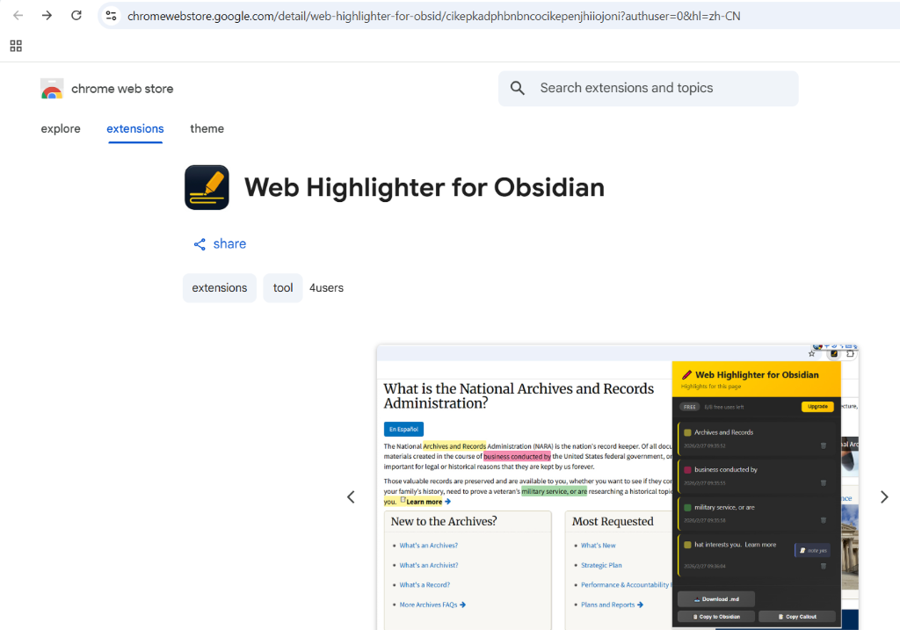
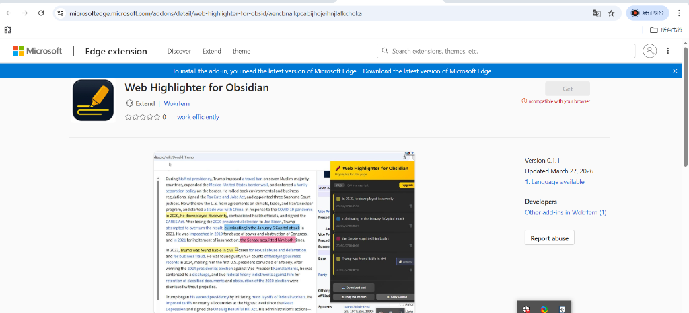

The most powerful solution for capturing web content and expanding your knowledge. All in Obsidian.
During his first presidency, Trump imposed a travel ban on seven Muslim-majority countries, expanded the Mexico–United States border wall, and enforced a family separation policy on the border. He rolled back environmental and business regulations, signed the Tax Cuts and Jobs Act, and appointed three Supreme Court justices. He withdrew the U.S. from agreements on climate, trade, and Iran's nuclear program, and started a trade war with China. In response to the COVID-19 pandemic in 2020, he downplayed its severity, contradicted health officials, and signed the CARES Act. After losing the 2020 presidential election to Joe Biden, Trump attempted to overturn the result, culminating in the January 6 Capitol attack in 2021. He was impeached in 2019 for abuse of power and obstruction of Congress, and in 2021 for incitement of insurrection; the Senate acquitted him both times.
In 2023, Trump was found liable in civil cases for sexual abuse and defamation and for business fraud. He was found guilty in 34 counts of falsifying business records in 2024, making him the first U.S. president convicted of a felony.

Trusted by researchers and readers. Install the official Web Highlighter for Obsidian straight from the Chrome Web Store to ensure the highest security and seamless automatic updates.
Get it from Chrome Web StoreYou can now install Web Highlighter for Obsidian directly from the official Microsoft Edge Add-ons store. Enjoy the exact same seamless highlighting experience on your favorite Windows browser.
Get it from Edge Add-ons
Everything you need to supercharge your reading and research workflow.
Install the Web Highlighter for Obsidian today, and start building your second brain effortlessly as you read across the web. Completely local, completely private.
Get exclusive early access to upcoming features, pro versions, and curated personal knowledge management tips straight to your inbox.
We respect your privacy. No spam, unsubscribe at any time.
Take control of what you read and learn.
© 2026 Workfern. All rights reserved.